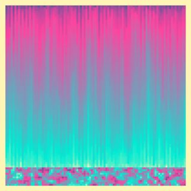
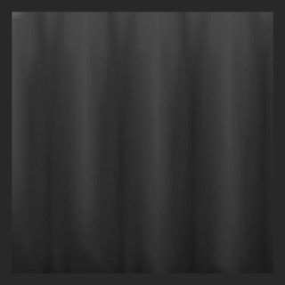

Art Blocks: the code and the token's seed are on-chain; the record, preview and live view come from Art Blocks' servers — these are our copies.
2 works · 6 files: for each work our copies of its record, its image (the preview) and its live view (the page that draws the art in a browser), each pinned at Pinata and Filebase and archived in S3. The code libraries the live views load are kept the same way. A marketplace reading the token's address goes to Art Blocks' servers, not to these copies; the copies keep the record, preview and live view if those servers stop, and their fingerprints are in the public list (see how these works are kept and proven). Artists are credited as the works' own records name them.

0xa7d8d9ef8d8ce8992df33d8b8cf4aebabd5bd270bafkreifzkdedbxakkb76q7gdjqb5ppnytexkfbdd4r43y5kmyw6asxnepq gateway.pinata.cloud · ipfs.filebase.io · c-ipfs-gw.nmkr.io — 2026-10-09 · pinned at Pinata and Filebase, archived in S3b950c830dc0a507fe87cc34c03d7bdb8992ea28463e479bc754cc5bc095da47c · 3,190 byteshttps://api.artblocks.io/token/151000201bafybeiepdju3jh7mv3c2hg2eivez2uw7g7nyr7dif2l3cpvbmoughnsjni gateway.pinata.cloud · ipfs.filebase.io · c-ipfs-gw.nmkr.io — 2026-10-09 · pinned at Pinata and Filebase, archived in S3d181fdf5cf74c6f84a51fce206d68264b833acf8925a7d384cbbcd636589767d · 364,009 byteshttps://media-proxy.artblocks.io/1/0xa7d8d9ef8d8ce8992df33d8b8cf4aebab…bafkreifzovpt2ixazptk7yw5xs477urmhj2szjm5qnqajs3hlt22yin5eu gateway.pinata.cloud · ipfs.filebase.io · c-ipfs-gw.nmkr.io — 2026-10-09 · pinned at Pinata and Filebase, archived in S3b9755f3d22e0cbe6afe2ddbcb9ffd22c3a752ca59d836004cb675cf5ac21bd25 · 11,762 byteshttps://generator.artblocks.io/1/0xa7d8d9ef8d8ce8992df33d8b8cf4aebabd5…
0xa7d8d9ef8d8ce8992df33d8b8cf4aebabd5bd270bafkreiaqhiajwm3i5eaam4slbrtokexzyun26zkkvu6wsgmf5uyxdlyhty gateway.pinata.cloud · ipfs.filebase.io · c-ipfs-gw.nmkr.io — 2026-10-09 · pinned at Pinata and Filebase, archived in S3103a009b3368e90006724b0c66e512f9c51baf654aad3d691985ed3171af079e · 3,184 byteshttps://api.artblocks.io/token/151000497bafkreic3eqcqewjskqu7ijlqpkkvyioy37pvcanabofi4elbhij2axdk64 gateway.pinata.cloud · ipfs.filebase.io · c-ipfs-gw.nmkr.io — 2026-10-09 · pinned at Pinata and Filebase, archived in S35b24050259325429f425707a955c21d8dfdf5101a00b8a8e11613a13a05c6af7 · 70,306 byteshttps://media-proxy.artblocks.io/1/0xa7d8d9ef8d8ce8992df33d8b8cf4aebab…bafkreigj5tok3hq3tnjjgomea5vi5injchdqqfys4acdz4cqx2rdkttmdu gateway.pinata.cloud · ipfs.filebase.io · c-ipfs-gw.nmkr.io — 2026-10-09 · pinned at Pinata and Filebase, archived in S3c9ecdcad9e1b9b52933984076a8ea1a911c7081712e0043cf050bea2354e6c1d · 11,762 byteshttps://generator.artblocks.io/1/0xa7d8d9ef8d8ce8992df33d8b8cf4aebabd5…Generated archive pages. Content identifiers point to the public IPFS network.